🏆 中国大学生计算机设计大赛参赛作品
RXcare
RXcare
以科技温暖医疗
无障碍全周期医疗健康服务系统 · App 用户端 + Web 医护端 + 物联网智能拐杖 三端协同，覆盖诊前、诊中、诊后全流程。
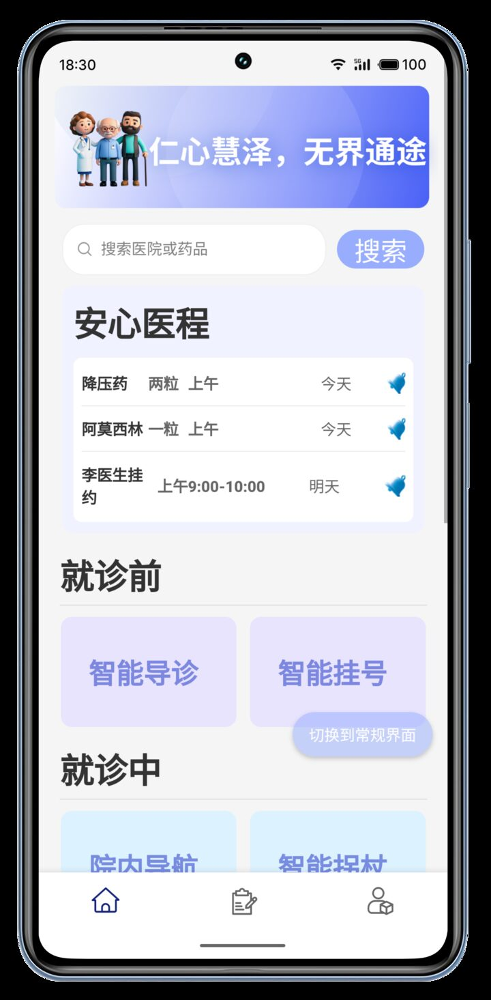


无障碍全周期医疗健康服务系统 · App 用户端 + Web 医护端 + 物联网智能拐杖 三端协同，覆盖诊前、诊中、诊后全流程。

两项国家级竞赛奖项，均为全国决赛。
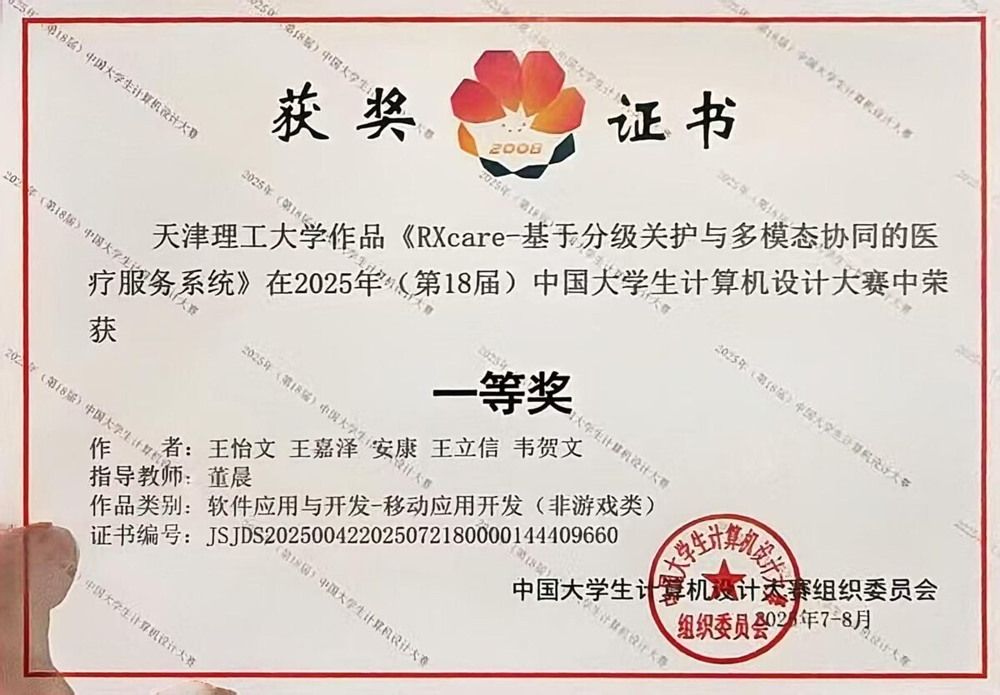
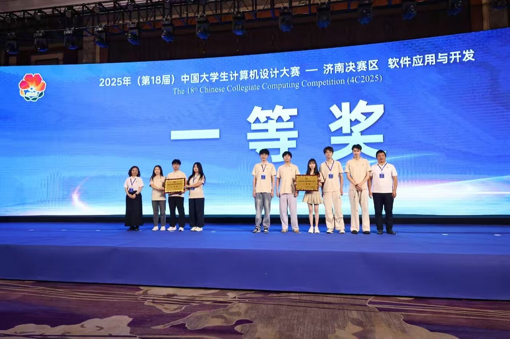
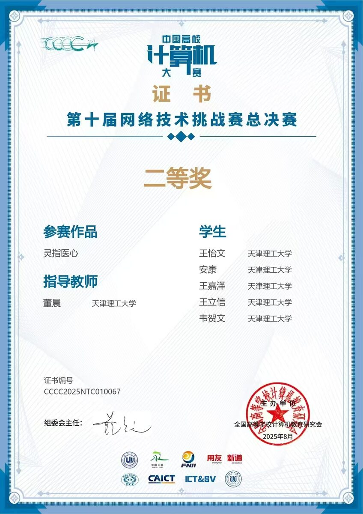
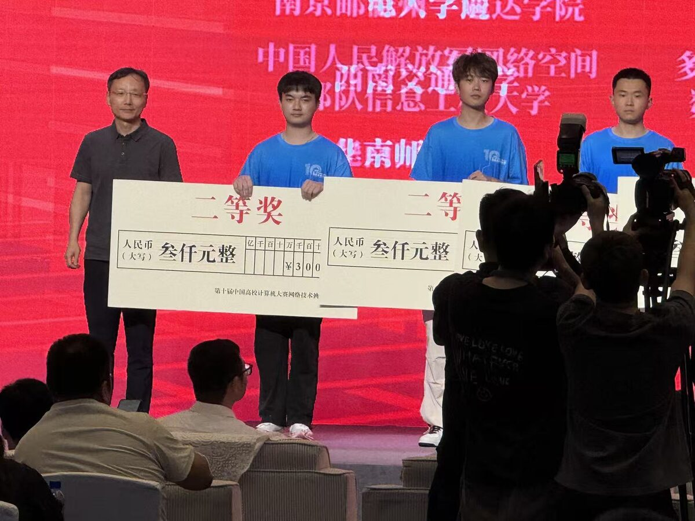
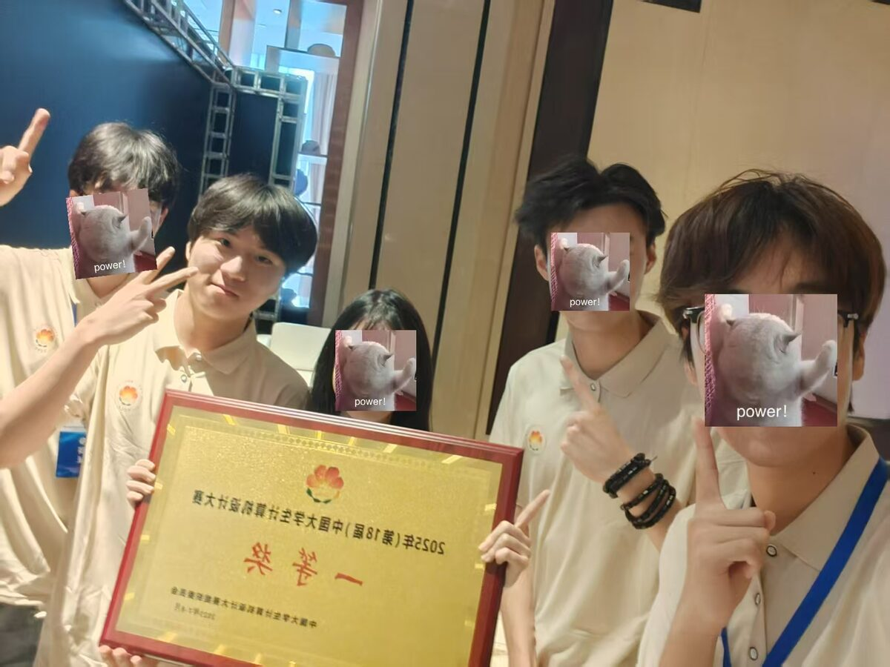
团队五人于颁奖现场 · 2025年（第18届）中国大学生计算机设计大赛
APP 端、Web 医护端、智能拐杖硬件端实时交互，数据贯通整个医疗场景。
标准版 + 关护版双模式设计。基于 uni-app + Vue3 跨平台构建，面向患者提供完整就医闭环。
医生工作台，集成患者管理、智能随访、处方开具等模块。
由队友负责
STM32F103 + 超声波 + IMU + BLE 5.0 硬件；跌倒检测（MobileNetV2）、手语识别（CNN+LSTM）、多智能体问诊（LangChain+Neo4j）。
由队友负责，App 端通过 BLE / WebSocket / SSE 接入
首页以"安心医程"为核心，整合药品提醒、就诊前/中/后快捷入口、健康数据总览。


交互式人体图（正/背面切换）点击选择疼痛部位，结合 FPS-R 疼痛量化（1–6 级），通过多轮问答描述症状，最终输出科室推荐与就诊路径规划。


多轮流式问答界面，支持 SSE 边生成边渲染，用户可描述症状并获取包含病症分析、急诊预警与就医建议的智能报告。前端实现渲染热路径优化，避免高频 DOM 更新卡顿。
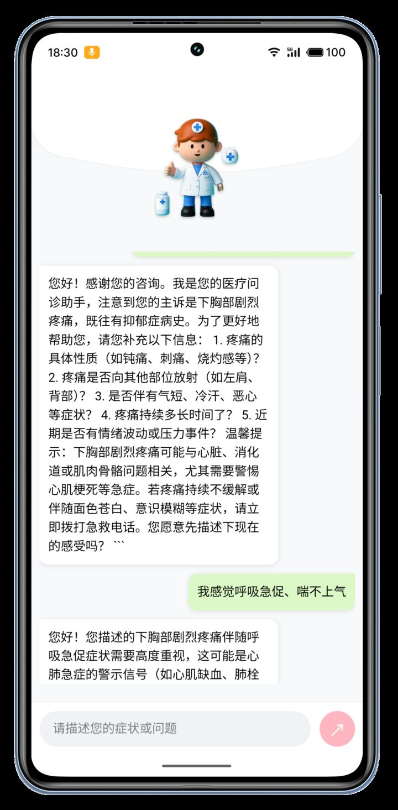
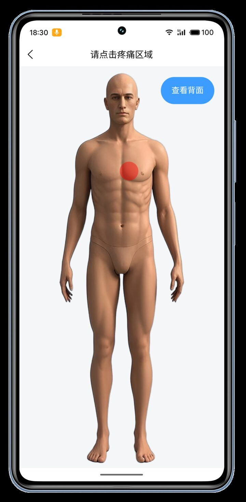

智能拐杖：通过 BLE 5.0 连接硬件，App 端实时显示行走危险等级与预警推送，状态统一托管于 Pinia store。
手语识别：WebView 嵌入手语识别模块（sign.html），前端实现自适应帧率与 telemetry 可视化，降低低端机丢帧率。
语音输入：WebSocket 长连接实时转写，语音按住说话 → 文字填入表单。

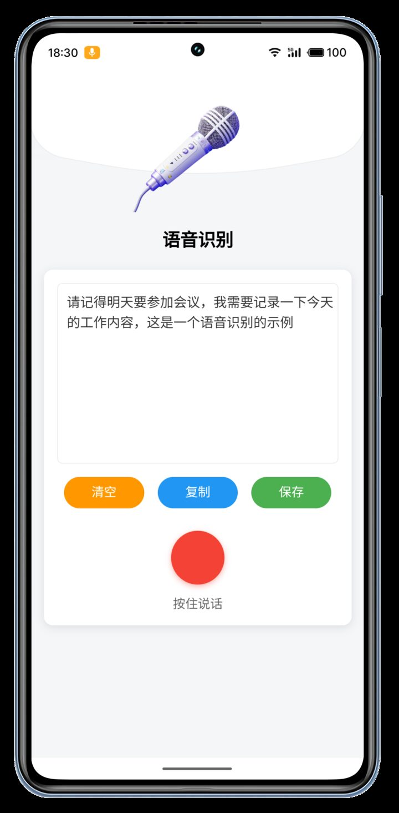
AI 药师：多轮对话获取用药指导，评估药物相互作用。
AI 营养师：基于病情与体检数据提供个性化饮食方案。
AI 情感疏导：匿名咨询，情绪疏导与压力管理。
三个 AI 助手均通过统一的流式请求封装（SSE）对接后端，共享同一套前端渲染管线。


院内 3D 导航：基于蜂鸟地图 SDK（fengmap）嵌入室内地图，支持起终点搜索与路径高亮。
门诊缴费：挂号费明细展示，一键支付。
检查结果：核酸、尿检等检查报告电子化展示，支持历史查询。


医生挂号：展示医生详情（职称、擅长方向），在线预约挂号。
住院办理：新建住院档案，填写基本信息，流程数字化。
诊后记录：检查报告详情查看与历史归档。
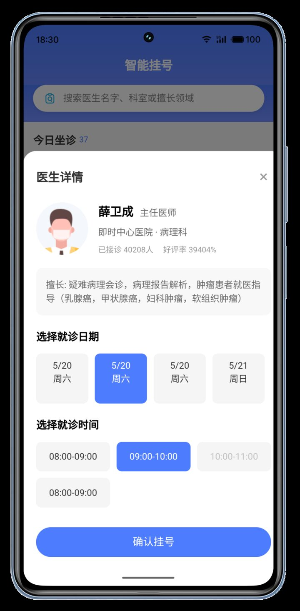
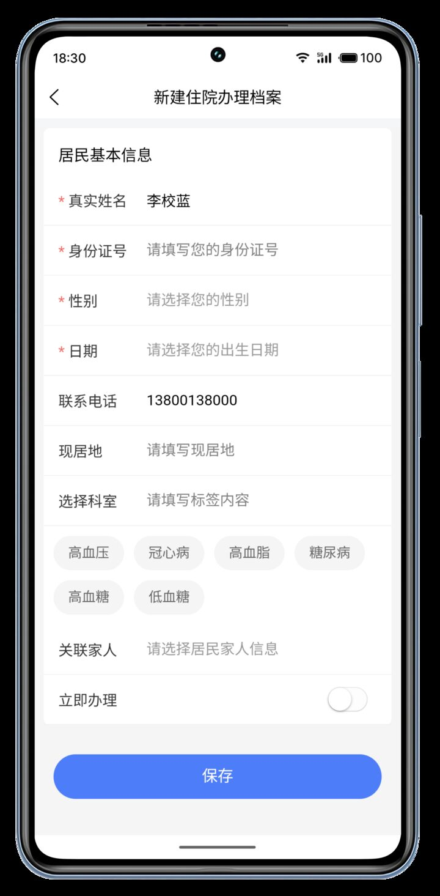
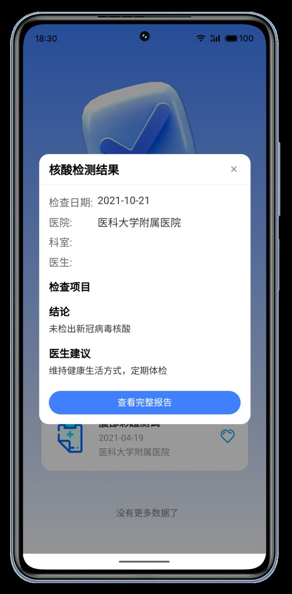
健康数据仪表盘：血糖、血压、心率、体重四维数据卡片总览，趋势图表支持周/月维度切换。
Care 社区：讨论圈 + 热门话题双入口，用户可按疾病主题加入圈子交流。
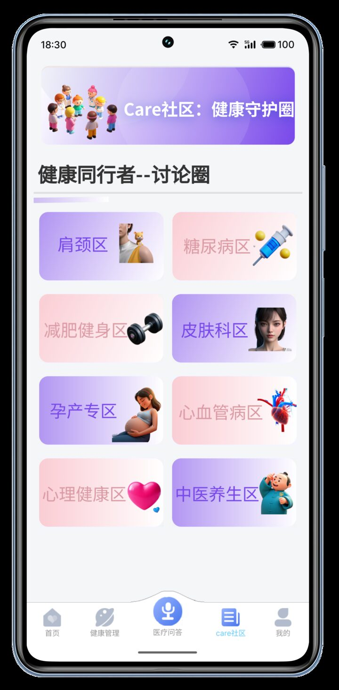
来源：作品说明书 §2.1 系统开发平台与运行平台